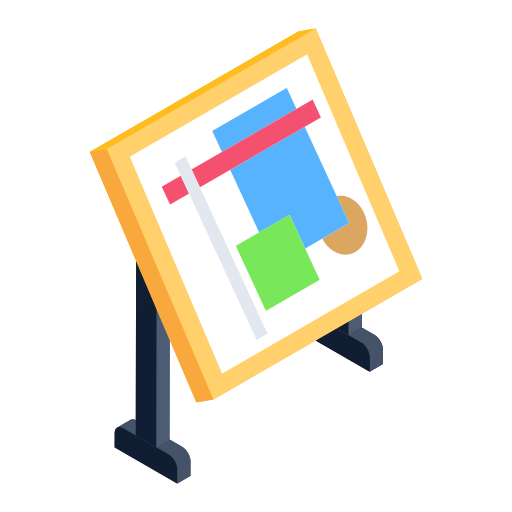

Bienvenue
Élève, parent, professeur, bienvenue dans votre espace central pour le cours de Technologie de M. Capaldi. Retrouvez vos documents, activités numériques et projets dans une interface simple et efficace !
Qu'est-ce qui vous amène aujourd'hui ?
Parcourir les classeurs de technologie ou rattrapper ses cours
(Re)faire les activités numériques en classe ou à la maison

Découvrir les projets à réaliser en classe